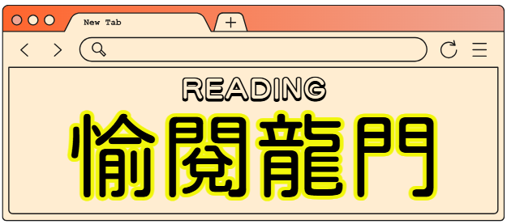
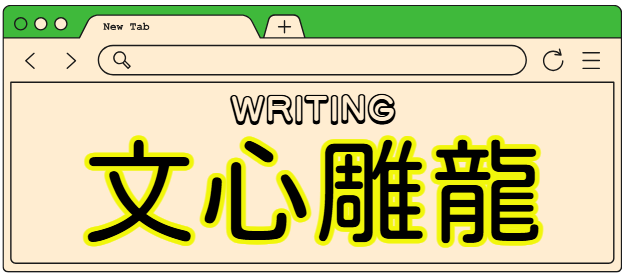
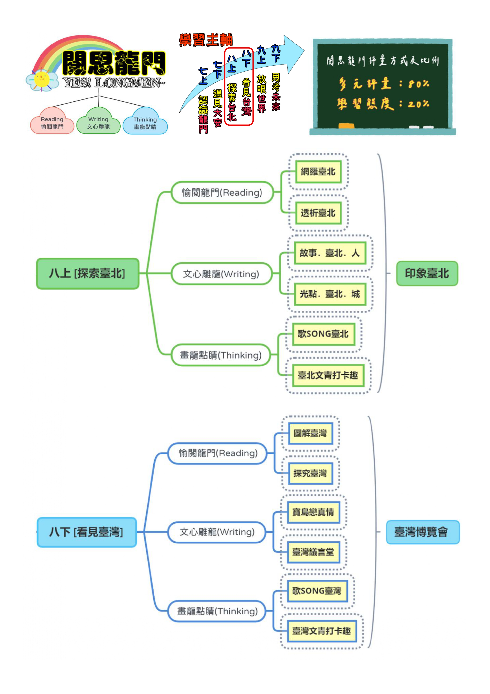
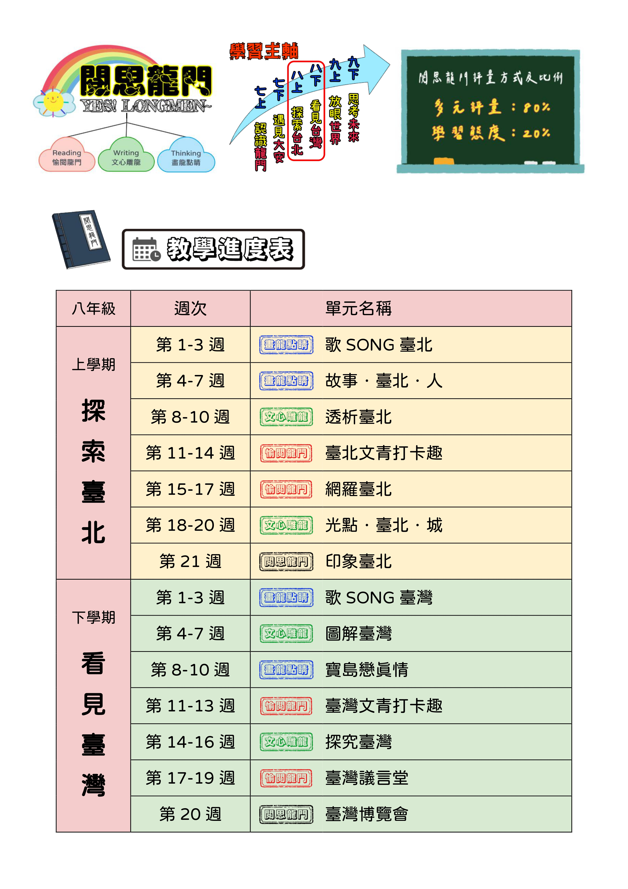
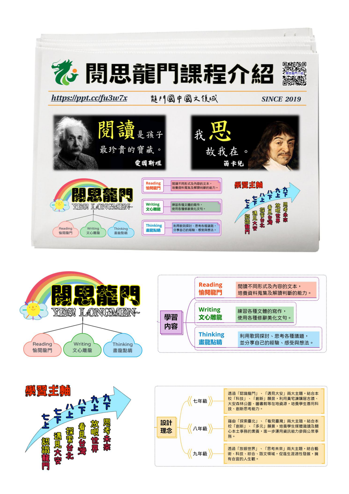

穿梭城鄉光點・寫下屬於青少年的城市人文記憶
結合「愉閱龍門（Reading）」、「文心雕龍（Writing）」與「畫龍點睛（Thinking）」三大維度， 從歌曲思辨、巷弄觀察、文本比較到數位資訊辨析，最終匯聚為期末表現任務——「印象臺北」主題海報。
由近及遠、由自身到世界，循序漸進開展孩子的情感與視野
校園生活・古蹟濂讓居
社區自然・大安森林公園
地誌文學・都市人文
寶島真情・臺灣博覽會
全球視野・世界沙龍
生涯探究・未來簡報王
藉由「探索臺北」、「看見臺灣」兩大主題，結合本校「創新」、「多元」願景，培養學生媒體識讀及關心本土事務的素養，進一步運用資訊能力參與公眾事務。
從臺北十二行政區的地理人文出發，引領學生欣賞城市地誌文學與街頭巷弄，體察人與環境的共鳴，深化對鄉土的情感與認同。
透過「權威和品質評鑑項目」檢視網路數位文本與多媒體資料，辨識資訊真實性與視角差異，培養邏輯思辨與理性探究力。
學習擴寫技法、文案聚焦與海報美編技巧，將複雜多元的城市研究轉化為圖文並茂的「印象臺北」作品，發表分享並參與公眾溝通。
串聯音樂地誌、人物擴寫、跨文本思辨、行政區地景、數位媒體識讀與城市遊記文案，點擊即可直達各單元全功能互動課堂！
音樂地誌互動教學平台
欣賞〈臺北的天空〉、〈臺北天晴〉、〈臺北調〉，體會都會生活與時代記憶。內建擬真黑膠唱盤/MV 雙模播放、歌詞挖洞翻牌、田字格注音查詢與學習單 PDF 下載。
人物擴寫互動寫作指南
觀察臺北街頭人文百態，掌握由抽象至具體的五感生動擴寫技巧。包含 Before/After 雙欄對照範例、AI 寫作教練引導與海報人物故事素材累積。
跨文本比較與觀點思辨教學平台
統整舒國治、韓良露、柯裕棻等多家名作，運用 Chart.js 五維度雷達圖剖析空間意象與節奏，進行觀點認同探討、語音朗讀與批判性思辨。
穿梭行政區與文學地誌漫遊
穿梭十二行政區文化地景圖鑑，結合文學作品深度賞析，提供行政區空白塗鴉底圖手繪指引，學習初階美編排版心法與海報圖片美化。
數位媒體識讀教學平台
深入各類出處之數位文本資料庫，依據「權威和品質評鑑」五大指標檢視資訊真實性與視角差異，辨別真偽、破除迷思並確立海報專題。
聚焦剪裁與臺北嬉遊記文案
針對城市特色角落進行細緻觀察，運用「聚焦」手法剪裁素材、凸顯核心主旨，撰寫情意深摯的城市遊記文案，為期末主題海報完成最精彩的文字總結。
以三大核心面向支撐，層層推進，最後聚焦於期末綜合表現任務「印象臺北」

面向核心理念：閱讀不同形式及內容的文本，培養資料蒐集及解讀判斷的能力。

面向核心理念：練習各種文體的寫作，使用各種修辭美化文句，抒發對城鄉深刻情感。
依據官方教學進度表與彈性學習課程計畫完整拆解，提供即時向度篩選
學習活動：能欣賞〈臺北的天空〉、〈臺北天晴〉、〈臺北調〉三首歌曲之美，並討論歌詞所承載的都會生活與人我意涵。
學習活動：1. 觀察臺北街頭的人文景觀；2. 體察臺北城中人我之間的緊密聯結；3. 運用擴寫技巧將抽象敘述具體化，詳述鮮明的臺北故事。
學習活動：1. 針對以臺北為主題的文本，依據核心要點進行統整與比較；2. 運用圖表統整分析各類文本觀點；3. 清楚表達是否認同文章論述。
學習活動：1. 認識臺北十二行政區的特色；2. 欣賞並解析以臺北為主題的文學作品；3. 指導初階海報美編與版面構成技巧。
學習活動：1. 認識不同出處的臺北主題數位文本；2. 根據「權威和品質評鑑項目」辨別數位文本真偽與正確性；3. 檢索並選定感興趣的海報主題。
學習活動：針對臺北相關主題文章，運用「聚焦」手法進行選取剪裁，凸顯文章核心主旨，呈現精鍊深刻的城市觀察心得。
學習活動：學生綜合運用本學期所學的知識與技能，選取、分析與歸納臺北相關文本，課堂分組協同製作主題海報。
兼顧多元技能評估與學習歷程表現，注重自我反思與同儕協作
點擊圖片可放大檢視龍門國中原創手稿與課綱進度

涵蓋八上「探索臺北」與八下「看見臺灣」之三維度關聯圖

完整 21 週單元進度、向度圖章與週次分配規劃
多元評量 80% 與學習態度 20% 之經典黑板視覺圖

龍門國中國文領域 SINCE 2019 經典報紙風格介紹